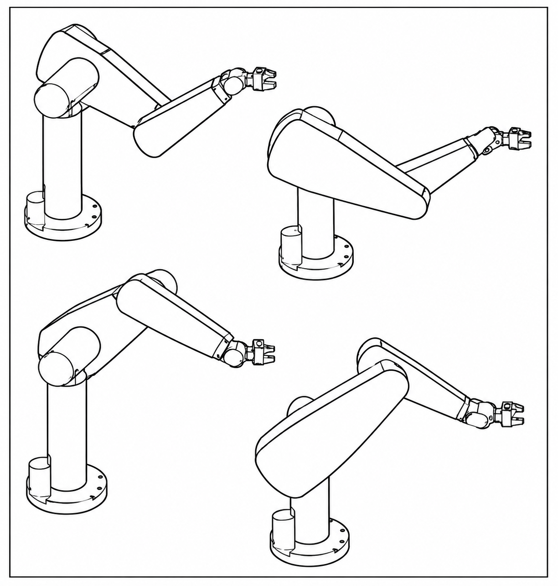
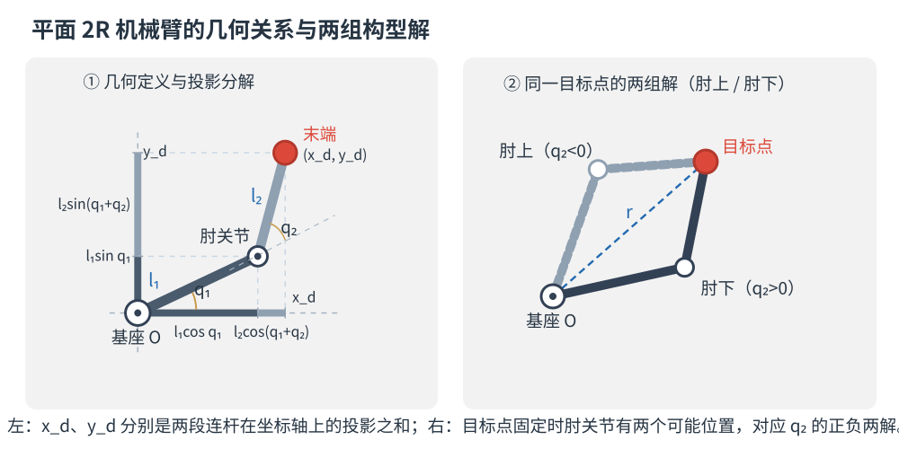
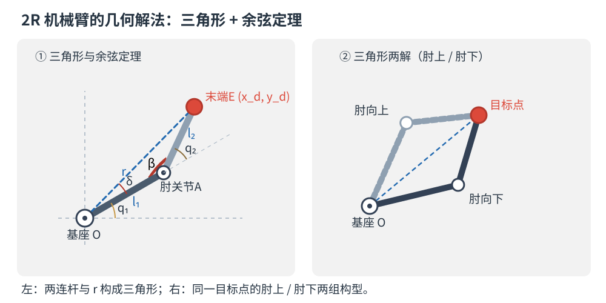
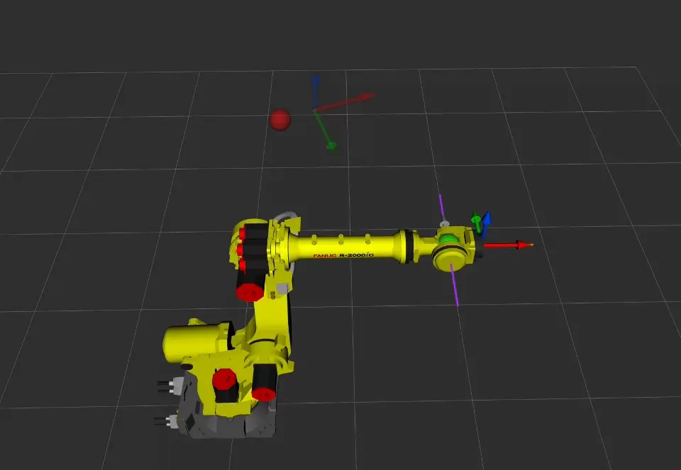
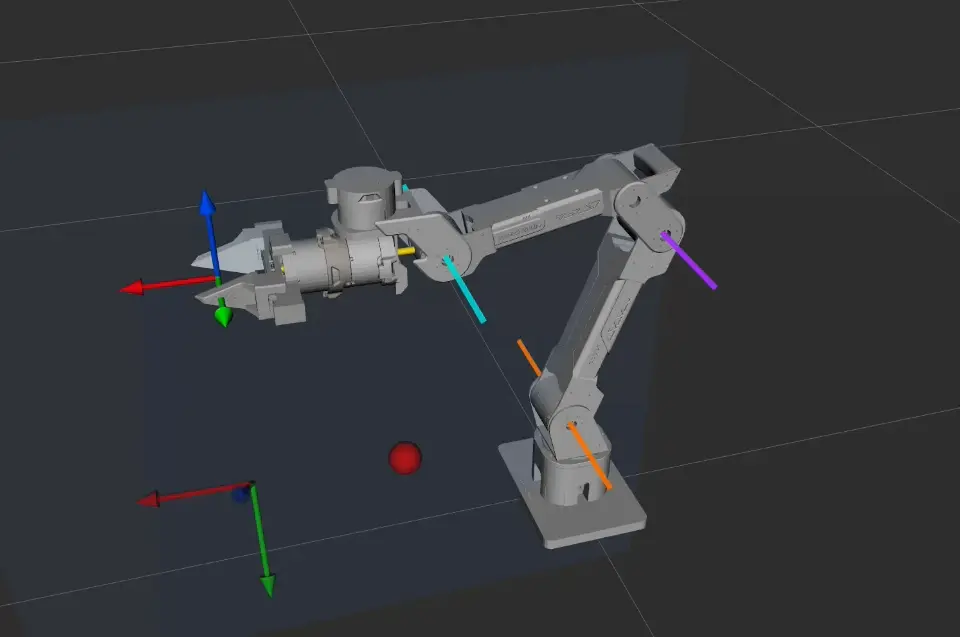
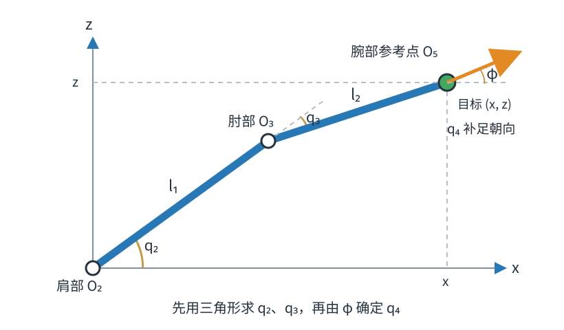

第三章 位置逆运动学
📌 概述：本章研究由末端目标位姿反求关节角的问题。先用平面 2R 机械臂说明可达性和多解，再介绍 JoyArm 的解析解与通用数值解，最后通过正运动学回代验证结果。
1 位置逆运动学的可解性
正运动学根据已知关节变量计算末端位姿；逆运动学则根据给定的末端位置或位姿，反求机械臂的关节变量。逆运动学求解前，首先需要判断目标是否可达；只有目标位于机械臂的工作空间内，逆解才可能存在。
📌 记号约定：本章记 \(\mathcal{Q}\) 为关节空间，即关节变量 \(\bm q\) 的允许取值范围；\(\mathbb{R}^3\) 为三维实数空间，即所有形如 \((x,y,z)\) 的位置坐标构成的集合；\(\mathcal{W}_{\mathrm{R}}\)、\(\mathcal{W}_{\mathrm{D}}\) 分别表示可达、灵巧工作空间。其余记号沿用第二章。
1.1 工作空间与可达点
机械臂末端执行器在关节运动范围内能够到达的全部空间位置，称为可达工作空间（reachable workspace）。
例如，对于两连杆平面 \(2R\) 机械臂，连杆长度分别为 \(l_1\) 和 \(l_2\)，末端到基座原点的距离记为：
在不考虑关节限位时，目标点可达的条件为：
这说明末端只能到达一个环形区域：距离过远时，两根连杆无法伸到目标点；距离过近时，连杆即使完全折叠也无法到达目标点。
同时需要注意：目标位置可达，不代表任意姿态都可达，能够以任意姿态到达的位置叫作灵巧工作空间，他通常小于可达工作空间。本章只需要知道这一差别，不展开计算。
1.2 逆运动学解的个数
目标可达不代表关节角唯一，机械臂可能以不同的肩部、肘部、腕部姿态达到同一个末端目标。满足目标位姿的全部关节角可以写成一个解集，如下：
这个集合可能为空、只包含一组解，也可能包含多组解。多解主要由机械臂的构型、关节周期性和冗余自由度共同产生。比如说肘部可以采用肘上或肘下构型，腕部也可能出现翻转前后的两组姿态。
以经典的 PUMA 560 为例，同一个末端位姿可以由多组关节角实现：

当目标靠近工作空间边界或奇异位形时，有些解会重合或消失；再加上关节限位，一些数学上成立的解也会被排除。所以，程序不光要算出候选解，还得从中挑出一组真正适合运动的解，一般会优先选离当前关节角近、不超限位、又远离奇异位形的那些。
2 位置逆运动学的代数解法和几何解法
逆运动学就是已知末端目标，反推关节角。如果目标只有末端位置，叫位置逆运动学；位置和姿态都要管，叫完整位姿逆运动学。只约束位置，可选的关节姿态一般更多；但装配、拧螺丝这类任务，末端朝向也得满足要求。
按求解手段，逆解方法分两大类：解析法给出关节角的闭式表达式，数值法通过迭代逼近（见第 5 节）。本节面向低自由度机械臂，讲清解析法最基础的两条思路——代数法与几何法。
2.1 代数解法
把正运动学方程 \(f(\bm q)={}^0_e\bm T_{\mathrm d}\) 展开为标量方程组，利用三角函数恒等式与消元法，逐个解出关节角。
2.1.1 平面 2R 机械臂的代数求解
问题：2R 臂连杆长 \(l_1,l_2\)，关节角 \(q_1,q_2\)，求末端到达目标点 \(\bm p_{\mathrm d}=(x_{\mathrm d},y_{\mathrm d})\) 所需的 \(q_1,q_2\)。分三步：写出正运动学方程 → 消元解出 \(q_2\) → 回代解出 \(q_1\)。
第一步：写出正运动学方程
如图，末端位置等于两段连杆位移之和——\(q_2\) 是相对前一根连杆的相对转角，故第二段连杆的方向角为 \(q_1+q_2\)：

这是两个方程、两个未知数的方程组，但正弦、余弦相互耦合，无法直接消元。\(q_2\) 只出现在 \(\cos(q_1+q_2)\) 与 \(\sin(q_1+q_2)\) 里，若能设法把 \(q_1\) "剥离"出去，就只剩含 \(q_2\) 的一元方程。
第二步：两式平方相加，消去 \(q_1\) 解出 \(q_2\)
将两式各自平方后相加，交叉项消去未知角，可得：
于是：
这也可以从基座、肘关节、末端三点构成的三角形中，用余弦定理直接得到。正、负号分别对应肘部向下与肘部向上两组构型（见上图右侧）；当 \(r=l_1+l_2\) 或 \(r=|l_1-l_2|\) 时两解重合，即为奇异位形。
第三步：回代解出 \(q_1\)
\(q_2\) 已知后，\(\cos q_2\)、\(\sin q_2\) 即为常数。用和角公式展开式（1），并按 \(\cos q_1\)、\(\sin q_1\) 整理，得到二元线性方程组：
其中 \(D=l_1^2+l_2^2+2l_1l_2\cos q_2=r^2\)。由 \(\tan q_1=\sin q_1/\cos q_1\)，把两者当作"纵坐标"与"横坐标"送入 \(\operatorname{atan2}\) 以还原象限，即得"方位角 + 构型修正角"形式：
其中第一项是目标点相对基座的方位角，第二项由肘部构型（\(q_2\) 的正负）决定。把 (2) 的两组 \(q_2\) 分别代入 (3)，即得两组解析解。
💡 关键技巧：用"两式平方相加"消去某个未知量（如本例消去 \(q_1\)），或把 \(\sin q_i,\cos q_i\) 当作未知数解出三角函数值；反解角度务必用 \(\operatorname{atan2}\) 而非 \(\arctan\)（后者会丢象限、漏解）。
2R 方程少、耦合弱，故可逐次消元得闭式解；通用 6R 六个关节高度耦合，消元后为高阶多项式，通常无闭式解，只有末三轴相交或连续三轴平行等特殊构型能化简，其余只能数值迭代求解。
2.2 几何解法
同一个平面2R问题也可以从几何关系出发求解。
对这个三角形使用余弦定理，就能得到与式（2）相同的肘关节角 \(q_2\)。正、负两支分别对应肘上和肘下两种构型。

目标点相对基座的方位角为
设第一根连杆与目标方向之间的夹角为 \(\delta\)，则第一关节角为
\(q_1\) 和 \(q_2\) 的符号需要根据肘上、肘下分支选择。据此得到的两组关节角，与代数法的结果完全一致。
代数法从运动学方程出发，步骤容易转化为程序，但方程复杂时推导会迅速膨胀；几何法更直观，却依赖清晰的轴线和投影关系。实际推导中通常会混合使用两种方法：先根据机械臂构型把问题化成平面几何，再用代数公式计算各个解支。
对应的交互演示位于 joyarm_code/chapt/chapt3_2r_demo.py。移动目标点可以观察肘上、肘下、边界两解重合以及目标不可达等情况。
3 末三轴相交的 6R 机械臂：Pieper 解耦解法
第 2 节指出：通用 6R 的逆解方程组高度耦合，通常无封闭解；但当构型满足特定几何条件时，方程可以解耦从而得到闭式解。本节讲最经典的一类——末三轴相交的 6R 机械臂（即"球形腕"），其解析解由 Pieper 给出。
3.1 为什么可以解耦
末三轴相交是指第4、5、6关节的轴线交于同一点，该点称为腕心 \(W\)。后三个关节转动时，腕部姿态会发生变化，但腕心位置不变，因此腕心的位置只由前三个关节决定。
利用这个特点，6个关节的求解问题可以分成两步：
| 子问题 | 待求量 | 已知条件 | 类型 |
|---|---|---|---|
| 位置子问题 | \(q_1,q_2,q_3\) | 腕心位置 \(W\) | 前 3 轴的低维位置逆解（见 第 2 节 的 3R 情形） |
| 姿态子问题 | \(q_4,q_5,q_6\) | 末端姿态 \({}^0_6\bm R\) 与前 3 轴的姿态 \({}^0_3\bm R\) | 三轴正交的 ZYZ 欧拉角分解 |

动图先让第 4、5、6 关节同时转动：腕部姿态不断变化，绿色腕心却保持不动，这正是末三轴相交带来的几何性质。
随后进入解耦求解过程：第 1、2、3 关节先把绿色腕心移动到红色目标点；腕心重合后，前三个关节保持不动，再由第 4、5、6 关节调整末端姿态，直到实线 RGB 坐标轴与半透明目标坐标轴重合。灰色虚线表示腕心到末端的固定偏置。
3.2 位置子问题：反推腕心并求 \(q_1,q_2,q_3\)
3.2.1 由目标位姿反推腕心位置
设目标（末端）位姿为 \({}^0_6\bm T\)，末连杆系 \(\{6\}\) 原点到腕心的固定偏置在 \(\{6\}\) 中为 \({}^6\bm p_W\)（常数），则腕心在基座系中的位置
这里先用目标姿态 \({}^0_6\bm R\)，把在末端系中表示的固定偏置 \({}^6\bm p_W\) 转到基座系，再加上末端位置 \({}^0\bm p_6\)。这样便从目标末端位置找到了目标腕心位置；接下来只需让前 3 轴把腕心送到这个点。
3.2.2 求 \(q_1\)：腕心在水平面上的投影
记 \({}^0\bm p_W=(x_W,y_W,z_W)\)。从基座俯视腕心：该构型下 \(q_1\) 即腕心水平投影的方位角
另一个方向是否对应有效解，仍要看后续 \(q_2,q_3\) 能否到达腕心；若有侧向偏置或关节零位偏角，也需在这里作相应修正。
3.2.3 求 \(q_2,q_3\)：化为平面 2R 问题
对本文采用的示例构型，第 2、3 轴平行且与基座轴正交，腕心随 \(q_2,q_3\) 在一个竖直平面内运动。先把腕心变换到第 1 系：
变换消去了 \(q_1\)。扣除肩关节的固定偏置后，把平面内的目标坐标记为 \((x,z)\)，问题便与 2.1.1 节的平面 2R 逆解 完全相同。两段等效连杆长度仍记为 \(l_1,l_2\)，结果为：
只有 \(\gamma\in[-1,1]\) 时才有实数解。\(q_3\) 的正、负两支对应肘上和肘下；其他球形腕机械臂仍然先求腕心，但前三轴的具体解式要按其尺寸和轴线布局推导。
3.3 姿态子问题：求 \(q_4,q_5,q_6\)
3.3.1 消去已知关节
前 3 轴解出后，\({}^0_3\bm R\) 已知。由 \({}^0_6\bm R={}^0_3\bm R\,{}^3_6\bm R\)，可以反解出后三轴的姿态：
3.3.2 化为 ZYZ 欧拉角分解
球形腕的三轴两两正交；当连杆扭角取 \(\alpha_4=-90°,\ \alpha_5=+90°\)（两轴正交的常见取值）时，其姿态矩阵恰可写成三个绕 \(Z\)／\(Y\)／\(Z\) 的基本转动之积：
这正是标准的 ZYZ 欧拉角。设 \({}^3_6\bm R=[r_{ij}]\)，则
当 \(\sin q_5=0\)（腕部奇异）时，\(q_4\) 与 \(q_6\) 只以组合角 \((q_4\pm q_6)\) 出现、无法分开，此时可固定 \(q_4\) 再求 \(q_6\)（与 1.2 节 的多解、第二章 2.1 节 的万向锁呼应）。
3.4 候选解的组合与筛选
位置子问题给 2 组（肘上 / 肘下），姿态子问题给 2 组（腕翻转），且 \(q_1\) 可有两个分支，合计
组候选解。各分支可能因目标不可达、超出关节限位或回代误差过大而被剔除，因此有效解通常少于 8 组。工程上需要把候选解逐一代入正运动学校验，再按关节行程、限位余量和奇异性等条件选择最终解（见 第 6 节）。
4 连续三轴平行的 6R 机械臂解析解法
上一节讲了末三轴相交的球形腕。另一类能给出闭式解的经典构型是连续三轴平行——连续三个关节轴线相互平行，臂部在其中一段上"折叠"。JoyArm 正属此类：其第 2、3、4 轴相互平行，第 5、6 轴相交。下面用忽略侧向偏置和腕部固定长度的简化几何讲解求解顺序，并假设各关节的零位偏角均为 0；具体机械臂的求解式仍须按实际连杆参数确定。
4.1 构型特征与解耦思想
观察本节机械臂构型可以看到：\(\hat{Z}_2\parallel\hat{Z}_3\parallel\hat{Z}_4\) 。当 \(q_1\) 固定时，这三个关节带动机械臂在同一个平面内运动。它们既能改变机械臂的弯曲形状，也会共同改变末段连杆在平面内的朝向。
对于本节采用的轴线方向，三个关节对末段朝向的共同作用可以合并为一个角：
式中的正负号取决于各关节轴的方向和坐标系定义，换一台机械臂后不一定相同。
\(\phi\) 表示末段连杆在运动平面内的合成朝向，但它不能单独确定腕部参考点的位置。即使 \(\phi\) 相同，不同的 \(q_2,q_3,q_4\) 组合仍然可以形成不同的臂形，使腕部参考点落在不同位置。\(\phi\) 已知后，我们只能确定末段连杆在目标位置中占据的方向和投影；扣除这部分投影，剩余位置才能化为平面 2R 问题。
📌 求解顺序提示：先由目标腕部位置确定 \(q_1\)，再由目标姿态解出合角 \(\phi\) 与腕角 \(q_5,q_6\)，最后利用目标位置和已知的 \(\phi\) 反推 \(q_2,q_3,q_4\)（见 4.3 与 4.4）。这与球形腕（第 3 节）“前三轴定位置、后三轴定姿态”的解耦方式不同。

动图中的橙、紫、青三条直线分别表示第 2、3、4 关节轴线，半透明蓝色区域表示它们共同形成的运动平面，黄色箭头表示 \(\phi\) 对应的末段朝向。绿色球是当前腕部参考点 \(O_5\)，红色球是目标位置；实线 RGB 坐标轴表示当前 TCP 姿态，半透明 RGB 坐标轴表示目标姿态。
动画先根据目标腕部位置确定 \(q_1\)，使运动平面转向目标方位；随后根据目标姿态确定 \(\phi,q_5,q_6\)。此时末端姿态已经与目标一致，但腕部参考点还没有到达目标位置。最后保持 \(\phi,q_5,q_6\) 不变，通过联动 \(q_2,q_3,q_4\) 改变臂形，使腕部参考点到达目标位置。
因此，本节采用的求解顺序是：
球形腕可以把位置和姿态分别交给前三轴与后三轴；连续三轴平行构型则需要先从目标姿态中取得后续位置求解所需的 \(\phi\)，再完成平面内的位置计算。
4.2 求 \(q_1\)：腕部参考点的水平投影
先看腕部参考点与第 1 轴之间没有侧向偏置的简化情况。设腕部参考点 \(O_5\) 与末端系原点重合，其目标位置为 \({}^0\bm p_{O_5}=(x_5,y_5,z_5)\)。从上方看，\(O_5\) 的水平投影方向就是第 1 轴的转角，因此
若机械臂存在侧向偏置，\(q_1\) 就不能只由一个方位角得到，还需要把偏置形成的三角关系计入，并检查相差 \(180°\) 的另一肩部分支。若 \((x_5,y_5)=(0,0)\)，水平投影本身也无法确定 \(q_1\)，此时需要结合目标姿态或选定参考角继续求解。
4.3 姿态子问题：先解出 \(\phi,q_5,q_6\)
第 2、3、4 轴都会改变末段朝向，但只根据目标姿态，还不能确定三个关节各自的转角。求解时先把它们对姿态的共同作用合并为平面朝向角 \(\phi\)：
这样一来，姿态子问题中只剩三个待求量：\(\phi\)、\(q_5\) 和 \(q_6\)。先从目标姿态求出这三个量，下一节再结合目标位置，把 \(\phi\) 分解为具体的 \(q_2,q_3,q_4\)。
具体做法是先去掉已经求出的第 1 轴转动和基座固定扭转。设目标末端姿态为 \({}^0_6\bm R\)，把这两部分合记为
则约化后的姿态为 \(\bm Q=\bm B^{\top}{}^0_6\bm R\)。此时 \(\bm Q\) 只包含“平面合角 + 后两轴”的旋转：
理解到这里，就已经掌握了本节的主要思路：先不区分 \(q_2,q_3,q_4\)，而把它们对姿态的作用压缩成一个 \(\phi\)。
下面给出程序中提取三个角的方式，用来说明上述分解如何落地。它只适用于本节采用的扭角配置，尤其用到了 \(\alpha_5=\pi/2\) 且 \(\sin\alpha_4\ne0\)；更换机械臂构型后，需要重新展开对应的姿态矩阵。先由 \(\bm Q\) 的 \((2,2)\) 元素求 \(q_5\)：
正负号给出两组腕部翻转分支。选定一组 \(q_5\) 后，再依次求 \(\phi\) 和 \(q_6\)：
其中 \(\bm R=\bigl[\bm R_Z(\phi)\bm R_X(\alpha_4)\bm R_Z(q_5)\bm R_X(\alpha_5)\bigr]^{\top}\bm Q\)，也就是从 \(\bm Q\) 中继续去掉已经求出的 \(\phi\) 和 \(q_5\)，剩下的旋转用于求 \(q_6\)。
⚠️ 腕部奇异：当 \(|\sin q_5|\to0\)，即 \(q_5=0\) 或 \(180°\) 时，\(\phi\) 与 \(q_6\) 只以组合角 \((\phi\pm q_6)\) 出现，无法单独确定。此时按 1.2 节 的思路取一个代表解：固定 \(q_6\) 的参考值（代码用 \(q_6^{\text{ref}}\)，默认取初值），再由组合角反求 \(\phi\)。
📌 要点：这是三轴平行构型与球形腕最大的不同——姿态方程顺带解出了位置子问题所需的 \(\phi\)，而不是"位置定腕心 → 姿态定腕角"。
4.4 位置子问题：由 \(\phi\) 解出 \(q_2,q_3,q_4\)
求出 \(q_1\) 后，第 2、3、4 轴的运动可以看成一个平面问题。把腕部参考点 \(O_5\) 变换到这个平面内：
在本节的简化几何中，\(O_5\) 在第 1 系中的平面坐标记为
这里沿用 2.1.1 节 的平面 2R 定义：两段连杆长度仍记为 \(l_1,l_2\)。由于它们对应当前机械臂的第 2、3 关节，两个关节角相应记为 \(q_2,q_3\)；其中 \(q_2\) 是第一段连杆相对平面 \(x\) 轴的转角，\(q_3\) 是第二段连杆相对第一段连杆的转角。肩部、肘部和 \(O_5\) 构成一个三角形，因此可以先用余弦定理求出 \(q_3\)：

反余弦给出的正负两组结果对应肘上和肘下两种构型。选定 \(q_3\) 后，再根据目标点的方向求肩关节 \(q_2\)：
此时 \(q_2,q_3\) 已经使腕部参考点到达目标位置，但末段朝向还不一定等于 4.3 节求出的 \(\phi\)。最后用 \(q_4\) 补足剩余角度：
因此，这一步可以概括为：用三角形确定 \(q_2,q_3\)，再用 \(q_4\) 补足末段朝向。
4.5 两类构型对比
| 维度 | 球形腕（§3） | 连续三轴平行（§4，JoyArm） |
|---|---|---|
| 求解顺序 | 先位置、后姿态 | 先姿态、后位置 |
| 位置子问题 | 前 3 轴 → 腕心（3 未知量） | 已知 \(\phi\) 后，平面 2R 解 \((q_2,q_3,q_4)\) |
| 姿态子问题 | 后 3 轴正交 → ZYZ 欧拉角 | 先解 \((\phi,q_5,q_6)\)（含平面合角） |
| 解的组数 | 最多 8 | 最多 8 |
| 典型机型 | 多数工业 6R（如 PUMA 类） | JoyArm 等三轴平行肘式臂 |
💡 一句话总结：连续三轴平行的解析解 = 用平行轴的合角把位置压到平面 + 用相交腕轴定姿态。它与球形腕殊途同归——都是"利用构型特征解耦"，这也是 第 5 节 数值法之外的解析解通用套路。本节公式采用简化几何；JoyArm 的具体实现见
joyarm_code/joyarm_core/robotics/ikine/ikine_solver_analytic.py。
5 机械臂逆运动学的数值解法
第 3、4 节的解析解依赖特定构型。对于没有闭式解的机械臂，可以从一组初始关节角出发，不断修正关节角，使末端逐步靠近目标位姿。这就是数值逆运动学。实际使用时，雅可比和关节修正量由 Pinocchio 计算。这里重点说明数值逆解的迭代过程。
5.1 数值逆解在做什么
数值逆解没有一步到位的公式，而是反复执行下面四步：
- 给定一组初始关节角 \(\bm q_0\)；
- 用正运动学计算当前末端位姿；
- 比较当前位姿与目标位姿，得到误差；
- 根据误差计算关节修正量，更新关节角。
更新后的关节角会再次进入正运动学。如果误差已经足够小，就返回当前结果；否则继续迭代。
数值逆解就是先给出一组关节角，再根据末端偏差反复修正。
5.2 如何表示位姿误差
末端位姿同时包含位置和姿态。位置可以直接相减：
姿态不能直接用两个旋转矩阵相减。这里用“从当前姿态转到目标姿态所需的最小旋转”表示姿态误差：
\(\log_3\) 把两个姿态之间的相对旋转变成三维旋转向量。将位置误差和姿态误差合在一起，得到六维误差：
求解器用下面的残差判断是否收敛：
当 \(\varepsilon(\bm q)<\mathrm{tol}\) 时，就认为当前关节角已经满足目标位姿。
5.3 如何修正关节角
雅可比矩阵 \(\bm J\) 描述“关节角发生微小变化时，末端位姿会怎样变化”。反过来利用这个关系，就能根据末端误差估计关节应修正多少：
其中 \(\bm J_{\lambda}^{+}\) 是阻尼伪逆。普通伪逆在奇异位形附近可能产生很大的关节修正量；阻尼参数 \(\lambda\) 用来压小这些不稳定的修正。\(\lambda\) 较小时，求解器更积极地靠近目标；\(\lambda\) 较大时，关节修正更保守。Levenberg–Marquardt（LM）方法会根据本次修正是否让误差下降，自动调整 \(\lambda\)。
得到修正量后，更新关节角并限制在关节范围内：
雅可比的具体构造和奇异性将在第四章中介绍。实际运行时，Pinocchio 会计算正运动学、雅可比和关节修正量，不需要使用者手工展开这些矩阵。
5.4 初值、奇异与随机重启
数值解依赖初值 \(\bm q_0\)。初值靠近目标解时，通常只需少量迭代；初值较远时，求解可能变慢、落入另一组解，或者无法收敛。
奇异位形附近，某些方向上的末端运动需要很大的关节变化。阻尼可以减轻修正量突然放大的问题，但不能保证每次都成功。求解过程中还需要限制单步修正量，并把关节角钳在硬限位内。
5.5 与解析解的关系
| 维度 | 解析解（§3、§4） | 数值解（本节） |
|---|---|---|
| 适用构型 | 依赖特殊几何 | 任意构型 |
| 解的性质 | 可枚举多组候选解 | 通常返回一组局部解 |
| 计算方式 | 直接计算 | 从初值反复迭代 |
| 初值依赖 | 通常不依赖 | 明显依赖 |
| 奇异附近 | 需要单独处理 | 可用阻尼缓和 |
| 失败处理 | 检查可达性与候选分支 | 调整初值或随机重启 |
连续轨迹中通常把上一时刻的关节角作为下一时刻的初值，这样既能减少迭代次数，也能降低解分支突然跳变的概率。
实际使用以 PinIkineSolver 为主，其实现位于 joyarm_code/joyarm_core/robotics/ikine/ikine_solver_pin.py。使用者只需要给出目标位姿、目标帧和初值 \(\bm q_0\)，必要时再设置 tol、iters；求解器内部完成正运动学、雅可比、LM 迭代和随机重启，并返回 IKResult(success, q, err, n_iter)。解析解对应同目录的 AnalyticIkineSolver；solve 返回距离 \(\bm q_0\) 最近的一组解，solve_all 返回全部有效候选解。
6 本章实践：JoyArm 逆运动学求解与校验
本节用配套脚本完成一次离线逆运动学实验：先构造可达的目标位姿，再调用 Pin 数值求解器，最后通过正运动学回代检查结果。整个过程无需连接机械臂。
6.1 求解与校验思路
先在关节限位内选择参考关节角 \(\bm q_{\mathrm{ref}}\)，通过正运动学构造目标位姿 \(\bm T_{\mathrm d}\)。这样得到的目标一定可达，可以避免把“目标不可达”误认为“求解器出错”。
随后从初值 \(\bm q_0\) 开始求逆解，得到 \(\bm q_{\mathrm{IK}}\)，再通过正运动学计算回代位姿 \(\bm T_{\mathrm{check}}\)。位置误差和姿态误差分别为
\(\bm q_{\mathrm{IK}}\) 不一定等于 \(\bm q_{\mathrm{ref}}\)，因为不同关节角可能对应同一末端位姿。判断逆解是否正确，应比较目标位姿与回代位姿，而不是直接比较两组关节角。
6.2 运行示例
脚本中的 Pin 数值逆解按下面三步完成：
| 步骤 | 操作 | 观察结果 |
|---|---|---|
| 1 | arm.fkine(q_ref, frame) 构造目标 |
目标位置与姿态 |
| 2 | arm.ikine(target, frame, q0) 求解 |
成功状态、关节角、残差和迭代次数 |
| 3 | arm.fkine(q_ik, frame) 回代 |
位置误差和姿态误差 |
首次运行先同步依赖，然后执行脚本：
cd joyarm_code
uv sync
uv run python chapt/chapt3_ikine_demo.py
脚本会依次打印目标位姿、三组不同初值的数值逆解结果，以及每组成功解的回代误差。数值实验结束后，脚本还会切换到解析求解器，枚举同一目标的候选解并逐组回代。
6.3 可以观察什么
- 初值对数值解的影响：比较三组初值的成功状态、迭代次数和最终关节角。初值越靠近目标解，通常收敛越快；不同初值也可能收敛到不同解支。
- 同一目标的多组解：观察解析求解器返回的候选关节角。只要各组解的回代位姿都接近目标，它们就是同一目标的不同构型。
- 回代误差与关节角差异：即使 \(\bm q_{\mathrm{IK}}\) 与 \(\bm q_{\mathrm{ref}}\) 相差较大，只要 \(\varepsilon_p\) 和 \(\varepsilon_R\) 足够小，逆解仍然有效。
连续运动还需要保持解分支一致，避免相邻目标点之间发生关节角跳变。最常用的做法是把上一时刻的关节角作为下一时刻数值求解的初值。